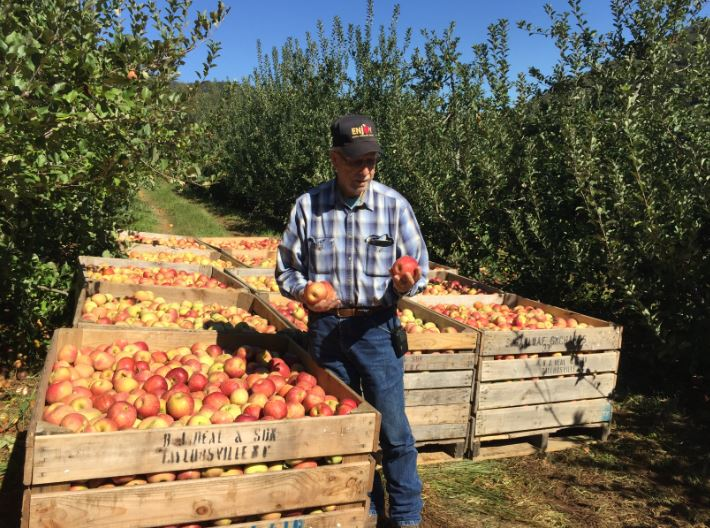

Целта на онлајн зелениот пазар е да овозможи лесно и удобно купување на свежи зеленчук и овошје преку интернет. Онлајн зелени пазари обезбедуваат платформа каде што потрошувачите можат да пребаруваат, избираат и купуваат различни видови свежи продукти без да треба да физички отидат до тржницата или продавницата.
Локалните фармери се лица или групи кои ги одгледуваат и произведуваат различни видови земјоделски производи во околината каде што живеат. Во контекстот на локалните заедници, локалните фармери се клучен дел во обезбедувањето на свежи, сезонски и често квалитетни производи.
Запознајте го Давид, локален фармер од Ресен кој се грижи секогаш да можеме да го вкусиме ресенското јаболко
